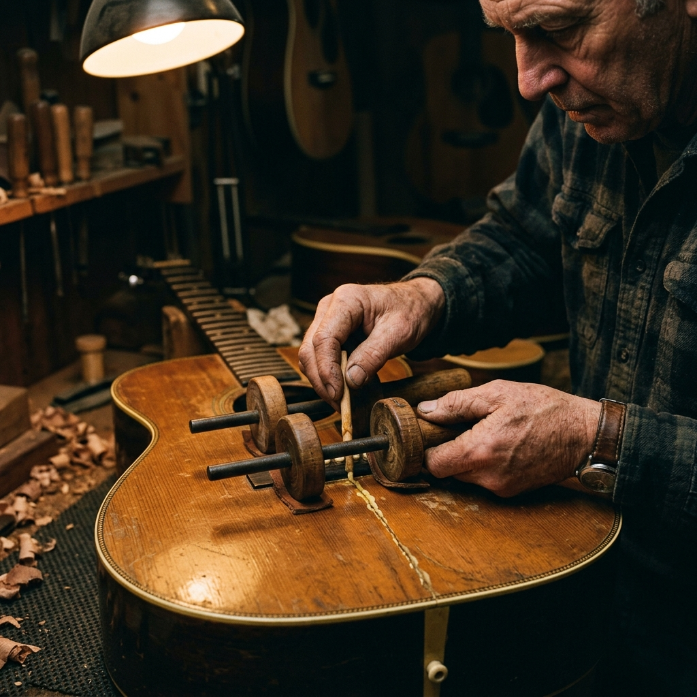
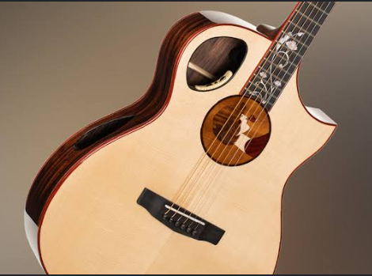

Repair. Restore. Revive.
Expertise for Every Era
From routine seasonal setups to complex structural restorations of century-old instruments.
The Art of Revival

Flood Recovery
Re-hydrated and re-braced 1930s parlor guitar.

Headstock Spline
Structural spline repair with blended nitrocellulose finish.

Vintage Preservation
Complete refret and hardware restoration on a '64 Solidbody.
The Restoration Process

2. Stabilize
Immediate threats to the instrument are addressed first. Loose braces are glued, cracks are cleated, and neck joints are secured using traditional hot hide glue.

5. Final Setup
The instrument is strung, settled, and dialed in. Action, relief, and intonation are optimized to the player's specific preferences.

Turnaround Times
- Standard Setups 1-2 Weeks
- Fretwork & Electronics 3-4 Weeks
- Structural Restoration 8-12+ Weeks
The FRET Warranty
All structural repairs carry a lifetime warranty to the original owner. We stand behind our glue joints and fretwork indefinitely.
"They took a '72 acoustic that had been unplayable in a closet for 20 years and made it sing again. The fretwork is flawless."

"The only bench I trust with my touring axes. Their setups endure flights, humidity changes, and aggressive playing."
"A seamless headstock repair. You literally cannot feel where the break was, and the nitro blend is perfect."